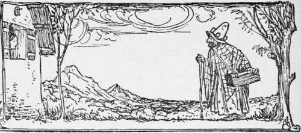
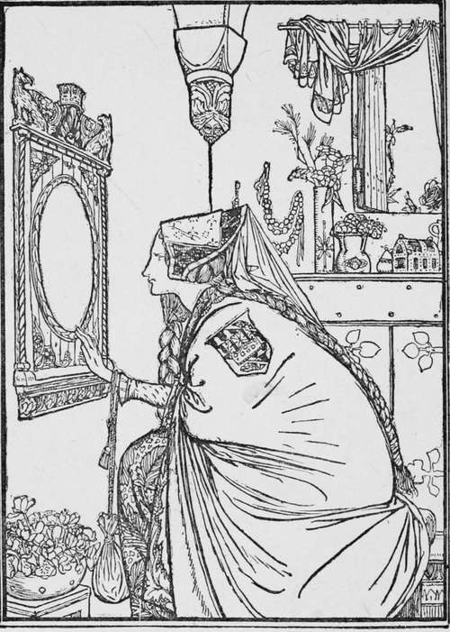

Snow-Drop
Description
This section is from the book "Household Tales by Brothers Grimm", by Brothers Grimm. Also available from Amazon: Household Tales by Brothers Grimm.
Snow-Drop
It was the middle of winter, when the broad flakes of snow were falling around, that the queen of a country-many thousand miles off sat working at her window. The frame of the window was made of fine black ebony, and as she sat looking out upon the snow, she pricked her finger, and three drops of blood fell upon it. Then she gazed thoughtfully upon the red drops that sprinkled the white snow, and said, "Would that my little daughter may be as white as that snow, as red as that blood, and as black as this ebony window-frame! " And so the little girl really did grow up; her skin was as white as snow, her cheeks as rosy as the blood, and her hair as black as ebony; and she was called Snow-drop.
But this queen died; and the king soon married another wife, who became queen, and was very beautiful, but so vain that she could not bear to think that any one could be handsomer than she was. She had a fairy looking-glass, to which she used to go, and then she would gaze upon herself in it, and say—
"Tell me, glass tell me true!
Of all the ladies in the land,
Wo is the fairest? tell me, who?"
And the glass had always answered—
"Thou, queen, art the fairest of all the fair."
But Snow-drop grew more and more beautiful; and when she was seven years old she was as bright as the day, and fairer than the queen herself. Then the glass one day answered the queen, when she went to look in it as usual—
"Thou, queen, art fair, and beauteous to see,
But Snow-drop is lovelier fat than thee!"
When she heard this she turned pale with rage and envy; and called to one of her servants and said, "Take Snowdrop away into the wide wood, that I may never see her any more." Then the servant led her away; but his heart melted when Snow-drop begged him to spare her life, and he said, " I will not hurt thee, thou pretty child." So he left her by herself; and though he thought it most likely that the wild beasts would tear her in pieces, he felt as if a great weight were taken off his heart when he had made up his mind not to kill her but to leave her to her fate, with the chance of some one finding and saving her.
Then poor Snow-drop wandered along through the wood in great fear; and the wild beasts roared about her, but none did her any harm. In the evening she came to a cottage among the hills; and went in to rest, for her little feet would carry her no further. Every thing was spruce and neat in the cottage: on the table was spread a white cloth, and there were seven little plates, with seven little loaves, and seven little glasses with wine in them; and seven knives and forks laid in order; and by the wall stood seven little beds. As she was very hungry, she picked a little piece off each loaf and drank a very little wine out of each glass; and after that she thought she would lie down and rest. So she tried all the little beds; but one was too long, and another was too short, till at last the seventh suited her: and there she laid herself down and went to sleep.
By and by in came the masters of the cottage. Now they were seven little dwarfs, that lived among the mountains, and dug and searched about for gold. They lighted up their seven lamps, and saw at once that all was not right. The first said, "Who has been sitting on my stool ? " The second, " Who has been eating off my plate ? " The third, " Who has been picking my bread ?" The fourth, "Who has been meddling with my spoon?" The fifth, "Who has been handling my fork?" The sixth, "Who has been cutting with my knife?" The seventh, "Who has been drinking my wine?" Then the first looked round and said, " Who has been lying on my bed?" And the rest came running to him, and every one cried out that somebody had been upon his bed. But the seventh saw Snow-drop, and called all his brethren to come and see her; and they cried out with wonder and astonishment and brought their lamps to look at her, and said, " Good Heavens! what a lovely child she is! " And they were very glad to see her, and took care not to wake her; and the seventh dwarf slept an hour with each of the other dwarfs in turn, till the night was gone.
In the morning Snow-drop told them all her story; and they pitied her, and said if she would keep all things in order, and cook and wash, and knit and spin for them, she might stay where she was, and they would take good care of her. Then they went out all day long to their work, seeking for gold and silver in the mountains: but Snow-drop was left at home; and they warned her, and said, "The queen will soon find out where you are, so take care and let no one in."
The Queen And Her Glass.
But the queen, now that she thought Snow-drop was dead, believed that she must be the handsomest lady in the land; and she went to her glass and said—
"Tell me, glass tell me true!
Of all the ladies in the land,
Wo is the fairest? tell me, who?"
And the glass answered—
"Thou, queen, art the fairest in all this land;
But over the hills, in the greenwood shade,
Where the seven dwarfs their dwelling have made,
There Snow-drop is hiding her head; and she
Is lovelier far, O queen! than thee."
Then the queen was very much frightened; for she knew that the glass always spoke the truth, and was sure that the servant had betrayed her. And she could not bear to think that any one lived who was more beautiful than she was; so she dressed herself up as an old pedlar, and went her way over the hills, to the place where the dwarfs dwelt. Then she knocked at the door, and cried, "Fine wares to sell!" Snow-drop looked out at the window, and said, " Good day, good woman ! what have you to sell?" "Good wares, fine wares," said she; "laces and bobbins of all colours." "I will let the old lady in; she seems to be a very good sort of body," thought Snow-drop ; so she ran down and unbolted the door. "Bless me!" said the old woman, "how badly your stays are laced! Let me lace them up with one of my nice new laces." Snow-drop did not dream of any mischief; so she stood up before the old woman; but she set to work so nimbly, and pulled the lace so tight, that Snow-drop's breath was stopped, and she fell down as if she were dead. "There's an end to all thy beauty," said the spiteful queen, and went away home.
Continue to:
Tags
fairy tales, children's stories, brothers grimm, household tales